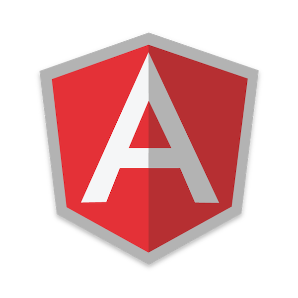
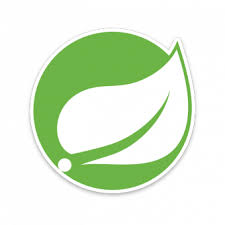
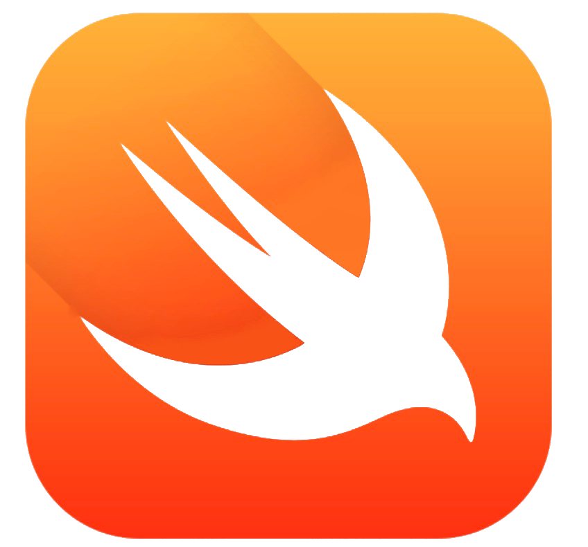
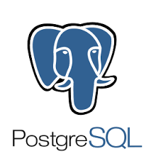
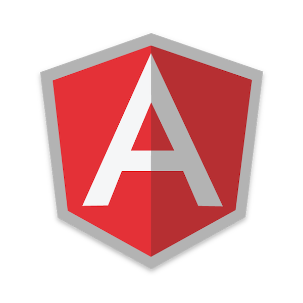
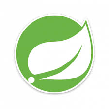
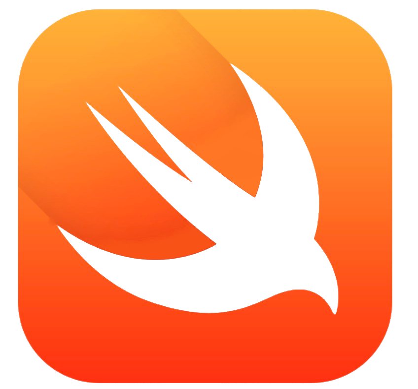
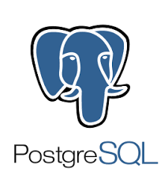

Technologies
I have been able to utilize a number of different technologies, languages, and frameworks in my time as a developer. I am also able to pick up new languages quite easily, and adapt to the needs of my team. Some of the languages/frameworks I am most comfortable with include:


 






